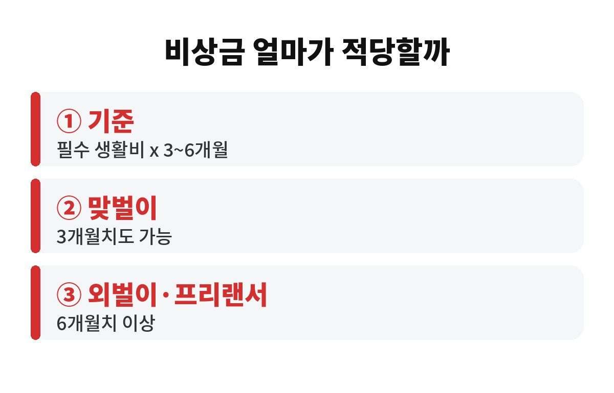

비상금 얼마가 적당하냐고 물으면 많은 재테크 책이 한 달 생활비의 3~6개월치를 기준으로 말해요. 월급 하나로 버티는 직장인이라면 6개월치가 있느냐 없느냐가 갑자기 닥친 위기를 빚 없이 넘기느냐를 가르기도 합니다. 내 통장에는 지금 몇 개월치가 들어 있는지, 같이 계산해 볼까요?
비상금은 투자 밑천이 아니라 "일이 터졌을 때 버티는 돈"이에요. 그래서 기준도 연봉이 아니라 한 달에 꼭 나가는 생활비입니다. 월세나 대출 이자, 관리비, 식비, 통신비, 보험료처럼 안 쓸 수 없는 돈만 더해 보세요. 여기에 3~6을 곱하면 내 비상금의 대략적인 목표가 나옵니다.
월급이 안정적이고 맞벌이라면 3개월치로도 충분하다는 의견이 많아요. 반대로 외벌이이거나 프리랜서, 자영업처럼 소득이 들쭉날쭉하다면 6개월치 이상을 권하는 경우가 많습니다. 정답이 하나가 아니라 내 상황에 따라 달라지는 숫자라는 점이 핵심이에요.
갑자기 병원비가 나가거나 이직 공백이 생겼다고 해볼게요. 비상금이 없으면 카드 할부나 현금서비스, 마이너스 통장에 손이 갑니다. 이런 돈은 이자가 높은 편이라 몇 달만 지나도 원금보다 이자가 더 무섭게 느껴져요.
더 아픈 건 따로 있어요. 적금이나 투자를 잘 이어 가다가도 급한 돈이 필요하면 해지해야 하죠. 만기를 앞두고 깨면 이자를 놓치고, 주식이나 펀드는 하필 떨어졌을 때 팔게 될 수도 있어요. 비상금은 수익을 내는 돈이 아니라 내 투자를 지켜 주는 방패인 셈입니다.

비상금의 조건은 두 가지예요. 원금이 깎이지 않아야 하고, 필요할 때 바로 꺼낼 수 있어야 합니다. 그래서 주식이나 코인처럼 값이 오르내리는 곳은 비상금 자리로 어울리지 않아요.
보통은 하루만 맡겨도 이자를 주는 파킹통장이나 입출금이 자유로운 통장을 많이 씁니다. 월급 통장과 분리해 두는 게 포인트예요. 같은 통장에 섞여 있으면 어느새 생활비로 새어 나가거든요. 금리는 은행마다, 시기마다 달라서 가입 전에 꼭 직접 비교해 보세요.
| 요점 박스 | 핵심 3줄 |
| ① 기준 | 필수 생활비 x 3~6개월 |
| ② 보관 | 원금 보장 + 즉시 출금 가능한 통장 |
| ③ 관리 | 월급 통장과 분리, 쓰면 다시 채우기 |
처음부터 6개월치를 만들려고 하면 숨이 막혀요. 그럴 땐 한 달 생활비의 1개월치부터 목표로 잡아 보세요. 월급날 자동이체로 일정 금액을 비상금 통장에 먼저 보내 놓고, 남은 돈으로 생활하는 방식이 가장 잘 먹힙니다.
1개월치가 모이면 2개월, 3개월로 천천히 늘리면 돼요. 중간에 비상금을 썼다면 자책하지 말고 다시 채우면 됩니다. 비상금은 쓰라고 만든 돈이니까요. 다만 "쓸 일이 맞는지"는 한 번 더 생각해 보세요. 세일이나 여행은 비상 상황이 아니죠.
한 가지 더 짚어 볼게요. 비상금을 모을 때 가장 흔한 실수는 "여유가 생기면 모아야지" 하고 미루는 거예요. 여유는 좀처럼 생기지 않거든요. 월급이 들어오는 순간 가장 먼저 떼어 놓는 돈이 진짜 비상금이 됩니다. 금액이 작아도 괜찮아요. 매달 꾸준히 쌓이는 습관이 결국 큰 숫자를 만들어 줍니다.
또 가족이 있다면 비상금 기준도 달라져요. 부양할 가족이 많을수록 필수 생활비가 늘어나고, 갑작스러운 병원비나 경조사 부담도 커지죠. 그래서 같은 직장인이라도 1인 가구와 4인 가구의 목표 금액은 전혀 다릅니다. 남의 기준에 맞추기보다 내 지출표를 먼저 적어 보는 게 순서예요.
오늘 당장 해볼 일은 간단해요. 한 달 필수 생활비를 계산하고, 지금 가진 현금이 몇 개월치인지 확인해 보세요. 3개월이 안 된다면 오늘부터 자동이체 하나만 걸어 두셔도 충분히 좋은 출발입니다. 여러분은 지금 비상금이 몇 개월치 있으신가요? 댓글로 알려 주세요.
도움이 되셨다면 구독해 두세요. 돈 되는 생활 정보를 계속 전해 드릴게요.
※ 본 글은 일반적인 정보 제공이며 투자 권유가 아닙니다. 금융 상품은 직접 비교 후 결정하세요.